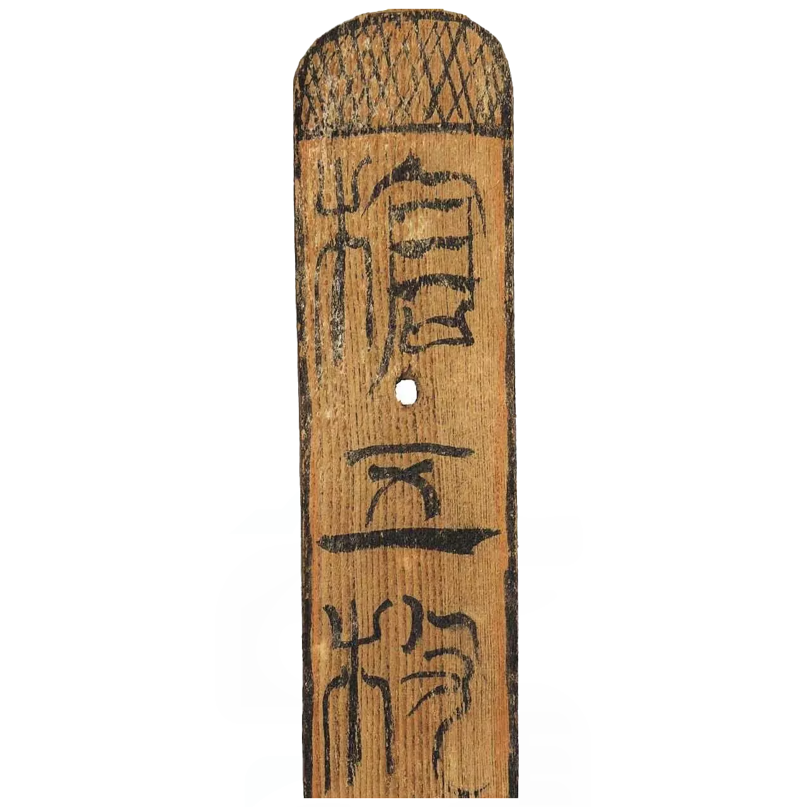
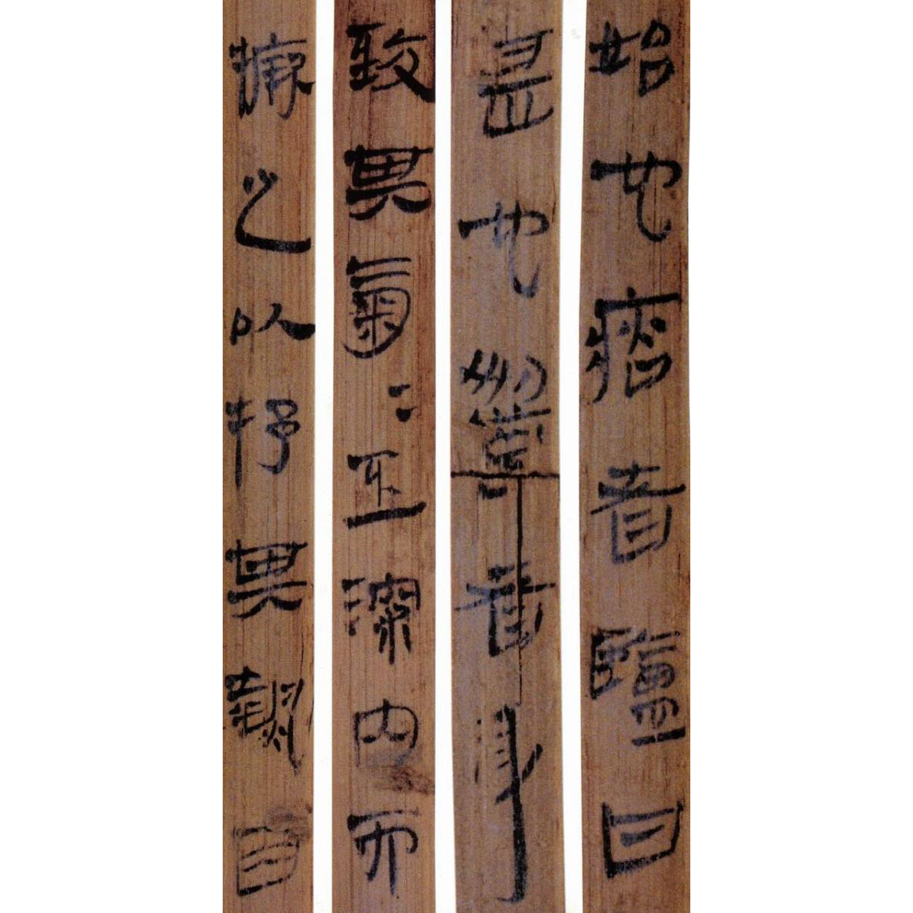
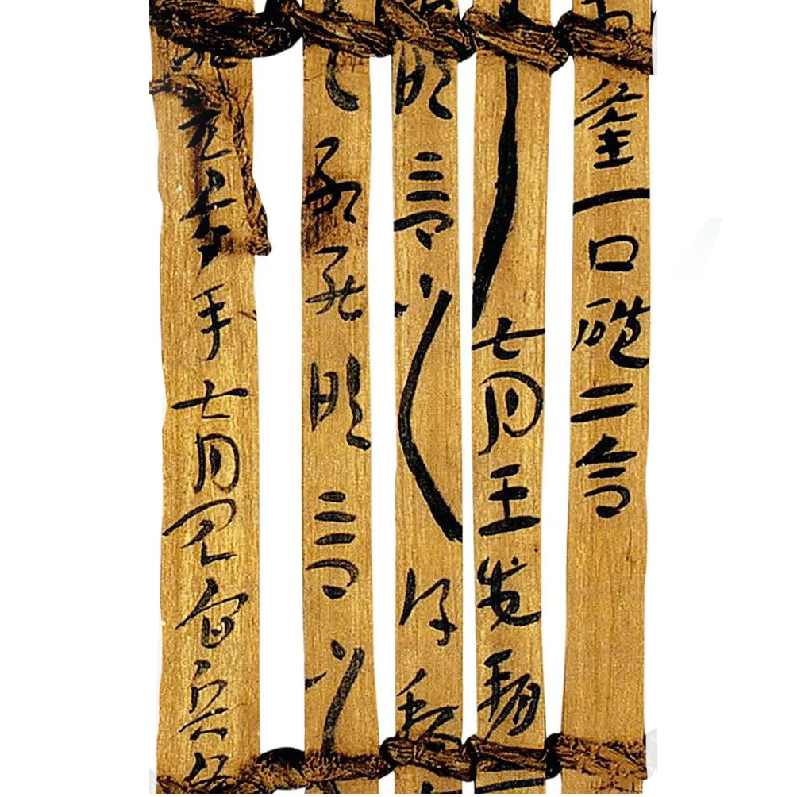
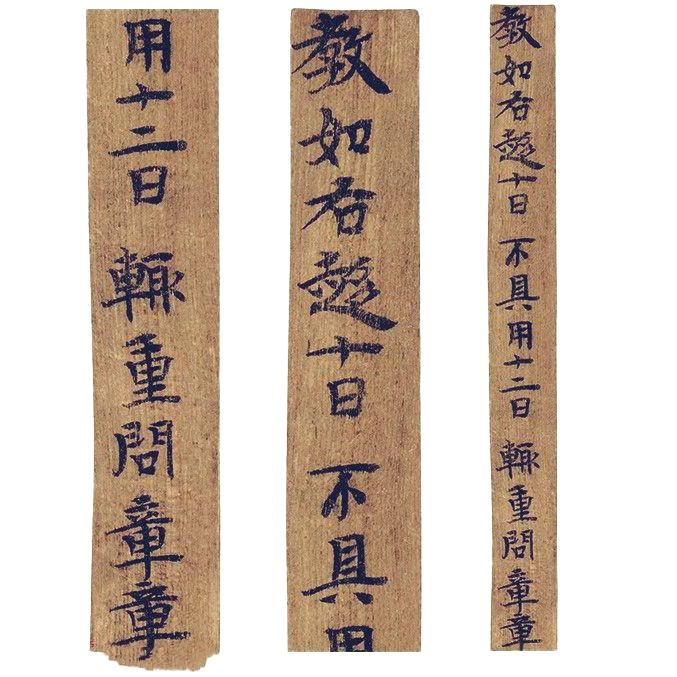

简牍记载的内容
查看全部
文书档案
主要记录了当时社会中的各类文书资料。其中包括皇帝下达的诏书、政府部门发布的文书、契约以及私人书信等。这些文书档案对于了解当时社会的政治、经济、文化状况以及人际关系等具有重要意义。
律法档案
简牍档案中还保存了大量的律法资料，特别是秦律和汉律。这些律法档案详细记录了当时的法律制度、规定以及案件审理的程式等，如《秦律十八种》、《效律》、《秦律杂抄》、《法律答问》、《封诊式》等。
簿籍档案
簿籍档案主要记录了当时的赋税、人事、器物、车马等各类账簿和名籍。例如，兵器簿、钱谷簿、器物簿等都是当时重要的簿籍档案。
证件档案
在简牍档案中，还有一类重要的内容是证件档案，主要包括通行证和身份证等。这些证件档案记录了当时人们的身份、出行等信息，如传、符、过所等都是当时常见的证件形式。

篆书
汉代简牍上篆书的使用逐渐减少，但在一些特殊场合或官方文书中仍有出现。例如，在某些简牍的封缄或标题处，可能会使用篆书来书写，以示庄重和正式。具体实例可能因保存状况和出土情况而异，直接以篆书为主要书写方式的汉代简牍较为少见，但根据考古发现，如《金关简》中就包含有篆书简。

隶书
隶书是汉代简牍上最为常见的字体。长沙五一广场东汉简牍是隶书的一个典型实例，这些简牍由许多不同的官吏书写，数量较多，字迹清晰，保存完整，展现了东汉中期隶书解体、草化、楷化的过程。此外，马王堆汉墓出土的《遣策》以及《马王堆》木简书法，也是隶书的重要实例

草书
草书在汉代简牍中也有所出现，特别是在一些低级官文书和私信等非正式场合。根据汉代简牍的书写习惯，可以推测在汉代边境屯戍人员的日常书写中，草书可能占有一定比例。例如《永元器物簿》等。此外，隶草作为隶书与草书之间的过渡书体，也在汉代简牍中有所体现。

楷书
楷书在汉代简牍中的出现相对较少，特别是在早期阶段。然而，随着汉字的演变和发展，楷书逐渐在汉代晚期至魏晋时期崭露头角。虽然难以直接给出汉代简牍中楷书的明确实例，但可以根据后世的书法发展推测其存在。事实上，长沙五一广场东汉简牍中的早期楷书已经有所体现，尽管它们仍然受到隶书的影响